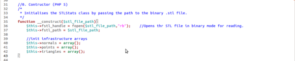

STL Volume Weight Calculator v1.1
Vital stats for 3D printing objects.
- Created: 01/04/2013
- latest Update: 01/04/2013
- By: Pushkar Paranjpe
Quickly estimate the cost of printing of your 3D object!
Introduction
STL format is popularly used for representing 3D object information for 3D printing applications. It is useful to know the volume and hence the weight of the material that may go into making an object on a 3D printer before one prints it. This may aid calculating the cost of printing that particular object.
This software uses a tetrahedron volume counting algorithm to determine the volume of the 3D model represented in a binary STL file. In the future, support to ascii STL files will also be added.
The math is wrapped inside an easy to use PHP class that exposes getter functions (i.e. getVolume, getWeight, etc) to calculate common statistics of a 3D object. This class will be useful to a website which deals in web based 3D printing applications.
Now auto-detects ASCII/BINARY STL formats!
The PHP code has been commented extensively. Example usage has been given at the end of this documentation as well as at the end of the class and should be commented out when the class is deployed on your server.
Install Notes
Follow these steps to start using this PHP class in your applications:
1. Extract the contents of the STLStats.zip folder.
2. Copy the STLStats.php file to your webserver folder such that your application can resolve the path and find this class file.
3. A sample binary STL file - 40mmcube.stl has been provided to help you test the class right away. Copy this file such that the PHP class can find this path. Pass this path as an argument when you instantiate the STLStats class. For example: if the 40mmcube.stl file is in the directory "/var/www/mystlfiles/" then call this class from within your code like this:
$mypath = "/var/www/mystlfiles/40mmcube.stl"; $obj = new STLStats($mypath); $unit = "cm"; echo $obj->getVolume($unit);
Constructor
Initialize the STLStats class by passing the path to the binary .stl file.

Example Usage:
$mystlpath = "../40mmcube.stl";
$obj = new STLStats("../40mmcube.stl");
Public Functions
Following public functions have been exposed such that they can be called from outside this php class.
Public functions: getVolume(), getWeight(), getDensity(), setDensity() and getTrianglesCount()

Binary Read Functions
Following binary functions have been defined. They are used to read and decode binary data and convert it to appropriate integer, float, etc formats.
Binary read functions: read_header(), read_triangles_count(), read_triangle()
Math Functions
Following math functions have been defined. The signedVolumeOfTriangle function is the core function of the class. It computes the tetrahedral volume for each triangle and returns its signed value for summing.
cm3_To_inch3Transform is a utility function for conversion of units from cubic cm to cubic inches.
calculateWeight is function that calculates the weight of the 3D object using the density as a parameter.
Binary read functions: signedVolumeOfTriangle(), cm3_To_inch3Transform(), calculateWeight()

Example Usage
$mystlpath = "../40mmcube.stl";
$obj = new STLStats("../40mmcube.stl");
echo "Basic Usage\n";
echo "--------------\n";
$unit = "cm";
$vol = $obj->getVolume($unit);
echo "Volume: " . $vol . " cubic " . $unit . "\n";
$weight = $obj->getWeight();
echo "Weight: " . $weight . " gm\n";
$den = $obj->getDensity();
echo "Density: " . $den . " gm/cc" . "\n";
$tcount = $obj->getTrianglesCount();
echo "Triangles Count: " . $tcount . " triangles read\n";
echo "\n";
echo "Units -> inch\n";
echo "--------------\n";
$unit = "inch";
$vol = $obj->getVolume($unit);
echo "Volume: " . $vol . " cubic " . $unit . "\n";
$weight = $obj->getWeight();
echo "Weight: " . $weight . " gm\n";
$den = $obj->getDensity();
echo "Density: " . $den . " gm/cc" . "\n";
$tcount = $obj->getTrianglesCount();
echo "Triangles Count: " . $tcount . " triangles read\n";
echo "\n";
echo "Change Density (default 1.04g/cc -> 2.44g/cc)\n";
echo "--------------\n";
$obj->setDensity(2.44);
$unit = "cm";
$vol = $obj->getVolume($unit);
echo "Volume: " . $vol . " cubic " . $unit . "\n";
$weight = $obj->getWeight();
echo "Weight: " . $weight . " gm\n";
$den = $obj->getDensity();
echo "Density: " . $den . " gm/cc" . "\n";
$tcount = $obj->getTrianglesCount();
echo "Triangles Count: " . $tcount . " triangles read\n";
Output
Basic Usage -------------- Volume: 63.999929809594 cubic cm Weight: 66.559927001978 gm Density: 1.04 gm/cc Triangles Count: 12 triangles read Units -> inch -------------- Volume: 3.9055153391186 cubic inch Weight: 66.559927001978 gm Density: 1.04 gm/cc Triangles Count: 12 triangles read Change Density (default 1.04g/cc -> 2.44g/cc) -------------- Volume: 63.999929809594 cubic cm Weight: 156.15982873541 gm Density: 2.44 gm/cc Triangles Count: 12 triangles read
Refs
-
Wiki article on the STL format
http://en.wikipedia.org/wiki/STL_(file_format) -
Thingiverse
http://www.thingiverse.com/